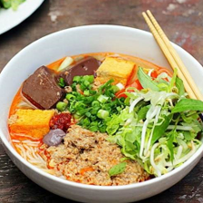

Bún riêu cua là món ăn đặc biệt quen thuộc ở các tỉnh miền Bắc. So với bún riêu ở miền Nam, tuy không có nhiều đồ
ăn bằng nhưng bún riêu cua Hà Nội vẫn mang một hương vị vô cùng đặc biệt. Vị ngon đậm đà của cua đồng, vị chua
thanh của cà chua với loại nước dùng đậm đà không thể bị trộn lẫn, bún riêu đã để lại trong lòng du khách một ấn
tượng thực vô cùng khó tả.
Nguyên liệu:
- Cua đồng (thịt cua giã nhuyễn và gạch cua)
- Cà chua;
- Chất tạo vị chua như quả dọc
- Hành khô, hành tươi
- Đậu phụ
- Các loại rau sống: tía tô, kinh giới, hoa chuối, rau muống chẻ
- Giấm bỗng
- Mắm tôm
Cách làm:
Cua: chọn cua cái màu vàng (hoặc màu đá) rửa sạch bóc tách mai, yếm; giã thân cua cho vài hạt muối, giã nhuyễn;
vớt ra bát nước khuấy đều để hơi lắng khoảng 7->10s chắt phần nước vào nồi để nấu gần đến phần cái thì chắt vào
rổ lọc bỏ bã cua.
Còn gạch cua thì khêu lấy cho vào bát.
Xử lý cua:
Cho cua xay vào một chiếc tô lớn rồi hòa nước vào, dùng tay bóp nhẹ cho thịt cua tan vào với nước.
Sau đó, gạn đổ nhẹ nhàng nước vào nồi. Và cứ thế làm lặp đi lặp lại hai bước này khoảng 2 lần đến khi thấy cuối
bát chỉ còn lại vỏ cua
Hòa một chút gia vị vào với nước cua vừa lọc rồi đặt lên bếp đun ở lửa vừa
Nước cua sôi được một lúc thì toàn bộ thịt cua sẽ chín, nổi lên trên
Vớt và để thịt cua riêng ra một cái bát
Nước riêu:
Phần cà chua băm nhỏ, xào qua với dầu ăn ở lửa to trước rồi cho vào nồi nước cua cùng với phần cà chua thái múi
cau
Đậu phụ thái thành miếng nhỏ rồi rán vàng.
Cho giấm bỗng vào nồi.
Phi thơm hành khô rồi đổ gạch cua vào, đảo đều và tắt bếp.